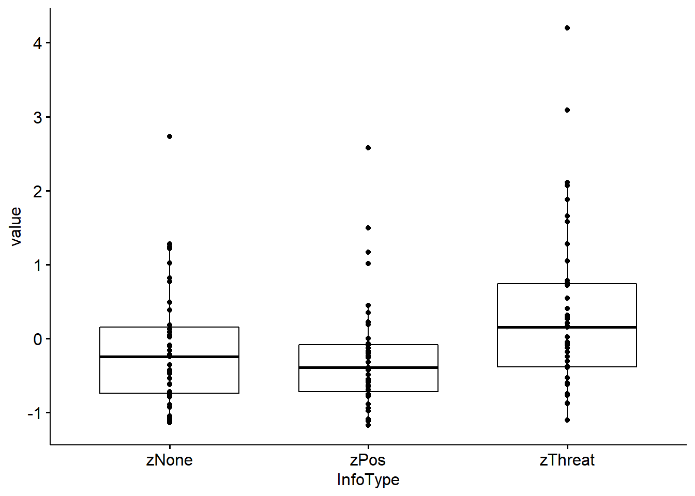

Examples
Two dependent means
The data used in this example (FieldLawson2003.csv, FieldLawson2003Long.csv) can be downloaded from the Blackboard (cf. Field 2003).
# Field & Lawson (2003)
fieldWide <- read.csv("Daten/FieldLawson2003.csv")
fieldLong <- read.csv("Daten/FieldLawson2003Long.csv")
pander(head(fieldWide, 5))| id | zThreat | zPos | zNone |
|---|---|---|---|
| gup1 | -0.3792 | -1.123 | 0.0155 |
| wdd2 | 1.044 | 2.574 | -0.09411 |
| epr3 | -0.1855 | -0.001735 | -0.1091 |
| gna4 | 0.746 | -0.9453 | 0.3792 |
| gnn5 | -0.05995 | -1.094 | -0.2187 |
| X | id | InfoType | value | |
|---|---|---|---|---|
| 23 | 23 | aal26 | zThreat | 0.0155 |
| 66 | 66 | aal26 | zPos | -0.2326 |
| 109 | 109 | aal26 | zNone | -0.6209 |
| 36 | 36 | aco50 | zThreat | 0.2082 |
| 79 | 79 | aco50 | zPos | 0.3443 |
| 122 | 122 | aco50 | zNone | -0.5414 |
In this experiment, children aged 6-9 years were given verbal information about two novel Australian marsupials that contained:
- either threat, or
- positive content.
A third marsupial, about which no information was given, acted as a control. (The type of information was counterbalanced across animals for different children). After the information, children were asked to approach three boxes that they were told contained the animals (in fact they did not). Latency to approach the boxes acted as a behavior measure of their fear of these animals.
This part of the experiment has a one-way repeated measures design (children approached all three boxes). The approach times were reported as z-scores where a positive score indicates that children took longer than average to approach, 0 represents the average approach time, and a negative score is indicative of being faster than average to approach.
The data frame fieldWide contains 4 variables:
id: indicates the participant codezThreat: threat informationzPos: positive informationzNone: no information
A version of this data file in ‘long’ format (FieldLawson2003Long.csv) contains these data (fieldLong) restructured into four variables:
x: consecutive number (not used for the analysis)id: as aboveInfoType: codes whether a score relates to an animal about which threat, positive or no information was given, andvalue: contains the z-score for the time for a given child to approach a given box.
Check Assumptions
Explore the data by drawing boxplot, histograms and if desired some descriptive statistics. Discuss the results of your analysis.
boxplot(value ~ InfoType, fieldLong) # use Long Format Data
DF <- fieldWide %>% gather(InfoType, value, 2:4) # or change to Long
DF$InfoType <- as.factor(DF$InfoType)
boxplot(value ~ InfoType, DF)
DF_Means <- DF %>% group_by(InfoType) %>%
summarise_at(.vars = names(.)[3],.funs = c(mean="mean"))
barplot(mean ~ InfoType, DF_Means)
A valuable plot to see the distributional properties of the data is the histogram or the density plot, e.g.:
ggplot(fieldLong, aes(x = value, y = InfoType)) +
geom_density_ridges(aes(fill = InfoType)) +
scale_fill_manual(values = c("#00AFBB", "#E7B800", "#FC4E07")) +
theme_bw()
Standard t-Test
Calculate the standard parametric t-Test for repeatet measure designs and discuss the results.
| Test statistic | df | P value | Alternative hypothesis |
|---|---|---|---|
| 2.87 | 42 | 0.006405 * * | two.sided |
| mean of the differences |
|---|
| 0.492 |
Robust t-Test
Next we will look at the Yuen’s modified t-Test for trimmed means (Yuen 1974). For an extented version with bootstrapping refer to (Keselman 2004)
- test: 2.528
- conf.int: 0.0756 and 0.7335
- se: 0.16
- p.value: 0.01789
- df: 26
- diff: 0.4046
- effsize: 0.3321
- call:
yuend(x = fieldWide$zThreat, y = fieldWide$zNone, tr = 0.2)
set.seed(123)
pander(Dqcomhd(fieldWide$zThreat, fieldWide$zNone, nboot = 200, q = c(0.25, 0.5, 0.75)))partable:
q n1 n2 est1 est2 est1-est.2 ci.low ci.up p.crit p.value 0.25 43 43 -0.4243 -0.7578 0.3335 0.01017 0.6655 0.05 0.03 0.5 43 43 0.1021 -0.2668 0.3688 0.07493 0.685 0.01667 0 0.75 43 43 0.8274 0.2319 0.5956 0.1083 1.198 0.025 0.03 call:
Dqcomhd(x = fieldWide$zThreat, y = fieldWide$zNone, q = c(0.25, 0.5, 0.75), nboot = 200)
| NULL | Est | S | M | L | ci.low | ci.up | |
|---|---|---|---|---|---|---|---|
| AKP | 0 | 0.3869 | 0.1 | 0.3 | 0.5 | 0.1349 | 0.7173 |
| QS (median) | 0.5 | 0.7209 | 0.54 | 0.62 | 0.69 | 0.5116 | 0.814 |
| QStr | 0.5 | 0.6977 | 0.54 | 0.62 | 0.69 | 0.5349 | 0.7907 |
| SIGN | 0.5 | 0.3256 | 0.46 | 0.38 | 0.31 | 0.192 | 0.476 |
Both tests yield significant differences. Note that trimming reduces:
- the mean difference from 0.49 to 0.40, and
- the test statistic is smaller in the robust version.
We could report the robust test as a significant difference between trimmed mean approach times to the threat and control animals, \(M_{diff} = 0.40 [0.08, 0.74], Y_t (26) = 2.53, p = 0.018\).
Two independent means
Check Assumptions
Standard t-Test
Robust t-Test
Several dependent means
The data used in this example is the same as for the dependent t-Test (i.e.: FieldLawson2003.csv)
Check Assumptions
To compare the latencies for all three boxes, we could use a repeated measure ANOVA function such as the aov(), or as an alternative the rstatix::anova_test() function. But before we do the analysis, we should check for possible violations of the assumptions:
# Assumptioncheck
fieldLong <- fieldLong[,2:4]
fieldLong$id <- factor(fieldLong$id)
fieldLong$InfoType <- factor(fieldLong$InfoType)
pander(fieldLong %>% group_by(InfoType) %>% identify_outliers(value))| InfoType | id | value | is.outlier | is.extreme |
|---|---|---|---|---|
| zNone | bku59 | 2.729 | TRUE | FALSE |
| zPos | wdd2 | 2.574 | TRUE | TRUE |
| zPos | inl37 | 1.491 | TRUE | FALSE |
| zPos | vxp18 | 1.008 | TRUE | FALSE |
| zPos | pap44 | 1.166 | TRUE | FALSE |
| zThreat | tat36 | 4.2 | TRUE | TRUE |
| zThreat | gtu30 | 3.085 | TRUE | FALSE |
pander(rbind(shapiro_test(fieldWide$zThreat),
shapiro_test(fieldWide$zPos),
shapiro_test(fieldWide$zNone)))| variable | statistic | p.value |
|---|---|---|
| fieldWide$zThreat | 0.8894 | 0.0006053 |
| fieldWide$zPos | 0.8463 | 4.207e-05 |
| fieldWide$zNone | 0.9047 | 0.001741 |


| Df | Sum Sq | Mean Sq | F value | Pr(>F) | |
|---|---|---|---|---|---|
| Residuals | 42 | 51.33 | 1.222 | NA | NA |
| InfoType | 2 | 8.839 | 4.42 | 7.103 | 0.001412 |
| Residuals1 | 84 | 52.26 | 0.6222 | NA | NA |
Standard ANOVA
Since ANOVA’s are special forms of linear models, we could also use the lm() function. The difference between these functions is the output. The aov() returns the table of \(F\)-statistics, whereas lm() returns the specific parameter estimates, significance tests and overall fit statistics.
The formula (model) of the aov() is specified as:
In words: we predict the Value from the variable InfoType plus an error term for that variable that is nested within the variable id. It is the error term that tells the function that it is a repeated measures design (because the error term for the predictor variable is nested within cases).

The results show means which are significantly different with latencies after threat information being significantly longer than for positive or no information. The results of the follow-up-test are shown below:
pander(pairwise.t.test(fieldLong$value, fieldLong$InfoType, p.adjust.method = "bonferroni", paired = T))method: paired t tests
data.name: fieldLong\(value and fieldLong\)InfoType
p.value:
zNone zPos zPos 1 NA zThreat 0.01922 0.005809 p.adjust.method: bonferroni
Robust ANOVA
For the robust test we will use the rmanovab() function and get the post hoc tests with pairdepb(). The option tr controls the amount of trim (and the default of 20% is advised). For the bootstrap-option the default is set to nboot = 599 (sufficient for now, but it is common to use 1000 or 2000).
- test: 6.751
- crit: 3.153
- call:
rmanovab(y = fieldLong$value, groups = fieldLong$InfoType, blocks = fieldLong$id, tr = 0.2, nboot = 500)
The robust test results also show a significant difference between trimmed mean approach times to the three animals, \(F_t = 6.75, p < .050\). The results of the robust follow-up test show the difference between trimmed means (\(\hat{\psi}\)), the associated bootstrap confidence interval, the test of this difference, the critical value of the test and whether the trimmed means are significantly different (at \(\alpha = 0.05\)):
comp:
Group Group psihat ci.lower ci.upper crit 1 2 0.5232 0.1398 0.9067 3.389 2.484 1 3 0.4046 0.007086 0.802 2.528 2.484 2 3 -0.1187 -0.4466 0.2092 -0.8989 2.484 fnames: zThreat, zPos and zNone
call:
pairdepb(y = fieldLong$value, groups = fieldLong$InfoType, blocks = fieldLong$id, tr = 0.2, nboot = 500)
We would report that the trimmed mean difference in latency between the threat box and the positive, \(\hat{\psi} = 0.52, [0.14,0.90]\), and no information, \(\hat{\psi} = 0.40, [0.01,0.80]\)1 boxes were significant. The trimmed mean difference between the positive and the no information box was not, \(\hat{\psi} = -0.12, [-0.44,0.90]\).
Referenzen
Field, & Lawson, A. P. 2003. “Fear Information and the Development of Fears During Childhood: Effects on Implicit Fear Responses and Behavioural Avoidance.” Behaviour Research and Therapy, 41(11), 1277-1293. https://doi.org/10.1016/s0005-7967(03)00034-2.
Keselman, H. J. 2004. “The New and Improved Two-Sample T Test.” American Psychological Society, 15(1), 47-51. https://doi.org/10.1111/j.0963-7214.2004.01501008.x.
Yuen, K. K. 1974. “2-Sample Trimmed T for Unequal Population Variances.” Biometrika, 61(1), 165-170. https://doi.org/http://dx.doi.org/10.1093/biomet/61.1.165.
be cautios with the interpretation of an effect if the \(CI\) has an upper, or lower limit so close to Null!↩︎